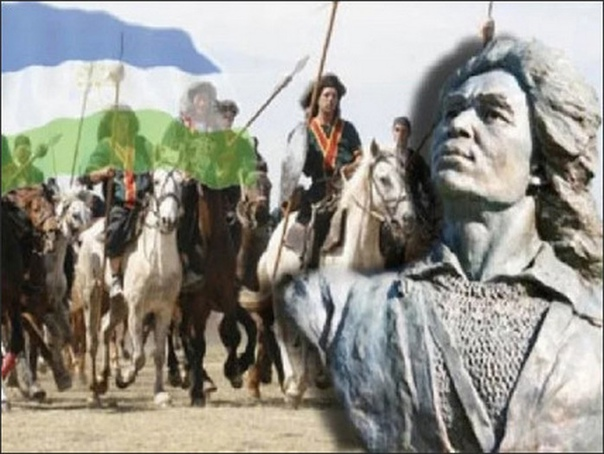

Салават Юлаев
Салават Юлаев – национальный герой Башкирии, один из руководителей Крестьянской войны 1773-1775 гг., сподвижник Емельяна Пугачёва; поэт-импровизатор (сэсэн). Национальный герой, поэт-сказитель родился в 1754 году в деревне Текеево.
После пленения Салавата отправили вместе с отцом на вечную каторгу. Местом каторги стал один из островов Балтики. Умер он в 1800 году, проведя в неволе 25 лет.
Салават — любимец башкирского народа. Любили и уважали его за смелость, а также за чудесные сказки, которые он сочинял сам. Его образ широко отражён в башкирском и русском фольклоре. В столице Башкирии играет хоккейный клуб, носящий имя национального героя.
Муса Гареев
Прославленный лётчик, участник Великой Отечественной войны родился в 1922 году, а летать учился на аэродроме Башкирского аэроклуба при ОСОВИАХИМ. После окончания лётной школы города Энгельс, в 1942 году ушёл на фронт.
Гареев начинал летать в звании сержанта, а ушёл в отставку в звании полковника. За боевые заслуги дважды награждён Звездой Героя СССР, орденами и медалями.
После войны Муса Гареев командовал полком, а умер в 1987 году. Захоронили героя в Уфе в Парке Победы, где благодарные уфимцы установили памятник прославленному земляку.
Загир Исмагилов
Прославленный советский башкирский композитор родился в 1917 году. Загир Исмаилов работал на лесозаготовках, но случай привёл его в Башкирский театр драмы, где он играл на курае и фортепиано.
Перед войной стал учащимся консерватории. Во время учёбы начал писать музыкальные композиции. В годы войны был артистом фронтовых бригад, писал патриотические песни, давал сольные фортепианные концерты.
В 1982 году получил звание народного артиста СССР. Написал множество опер, среди которых особо выделяются «Салават Юлаев», «Акмулла».
Ирек Зарипов
Ирек Айратович Зарипов — российский лыжник и биатлонист. Заслуженный мастер спорта России, четырёхкратный чемпион зимних Паралимпийских игр 2010 года в Ванкувере. Когда Иреку было 17 лет, подающий большие надежды спортсмен, попал в серьёзную аварию, утратив возможность ходить. Целеустремлённый парень не забросил спорт, а стал активно заниматься.
Ирек пробовал себя в различных видах спорта, пока не встретил тренера по лыжным гонкам и биатлону. Был включён в паралимпийскую сборную России.
На канадских трассах Ванкувера Ирек Зарипов завоевал 4 золотые медали. Две биатлонные и две лыжные. Показал всё, на что способен настоящий паралимпиец. В Сочи на 15-километровой гонке стал серебряным призёром. Кроме спортивных медалей, имеет государственные награды.
Ляйсан Утяшева
Ляйсан Утяшева – российская гимнастка, с чьим именем связано несколько сложнейших элементов художественной гимнастики. Легенда, завоевавшая Кубок мира и становившаяся победительницей многочисленных международных соревнований. Заслуженный мастер спорта. Женщина, сделавшая успешную карьеру после полученной тяжелой травмы и ухода из спорта. Модель и телеведущая, вдохновитель и организатор спортивного интернет-проекта «Сила Воли». Автор автобиографической книги «Несломленная». Супруга резидента Comedy Club Павла Воли.